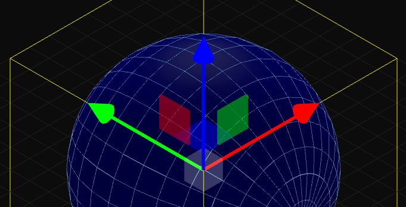

Versión 1.2
Un editor 3D simple y de código abierto para tus proyectos.

Wasx Alpha Software 1984, 2026
Programado por Rubén Pastor Villarrubia
License: MIT
Github del proyecto: https://github.com/wasx/symple3d